A bordo do Iana I, você atravessa o coração da Amazônia em 5 dias de expedição fluvial. Rio Negro, Rio Amazonas, Rio Tapajós — em sequência, sem atalho.
Você foi. Viu o rio de longe. Fez o passeio de barco de duas horas. Comprou artesanato no mercado. E voltou com a sensação de que a Amazônia real ficou do outro lado da margem.
Não é culpa sua. O turismo convencional foi construído para ser seguro, rápido e fácil de vender. Hotéis na cidade, passeios de um dia, grupos grandes. Você vê a Amazônia como cenário — nunca entra nela de verdade.
O que falta não é destino. É tempo dentro do rio. É dormir com o barulho da floresta. É chegar em lugares que não têm estrada — e que nunca vão ter.
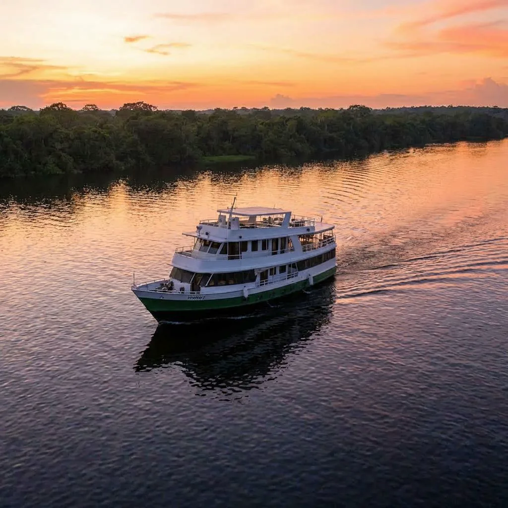
Nenhum roteiro comercial faz esse trajeto de ponta a ponta pelo rio. A Green Boat criou a primeira expedição que une Manaus e Alter do Chão em uma navegação contínua — sem pular trechos, sem atalhos de avião no meio do caminho.
São 5 dias a bordo do Iana I atravessando três dos rios mais extraordinários do planeta em sequência. Rio Negro. Rio Amazonas. Rio Tapajós. Cada um com uma cor, uma temperatura, uma personalidade diferente — e você vê a transição acontecer na sua frente.
No caminho, você não passa pelos lugares. Você entra neles. Aldeia indígena. Comunidade ribeirinha histórica. Floresta Nacional com guia local. Praias de rio que a maioria dos brasileiros nunca vai ver.
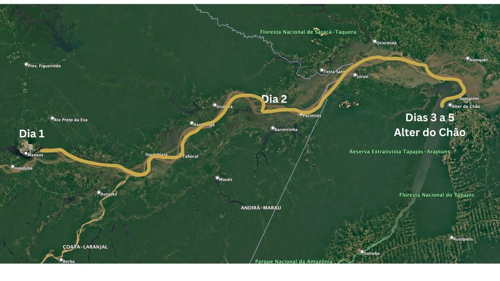
Você já foi a destinos turísticos e voltou com a sensação de que faltou profundidade. Quer experiência real — não cenário.
O que vai ficar na memória não é o que você publicou. É o silêncio de um igarapé, o céu aberto no Amazonas e a conversa com quem vive na floresta há gerações.
O Iana I tem capacidade para 16 passageiros. Não é exclusividade artificial. É o tamanho do barco — e é o que garante que a experiência funciona.
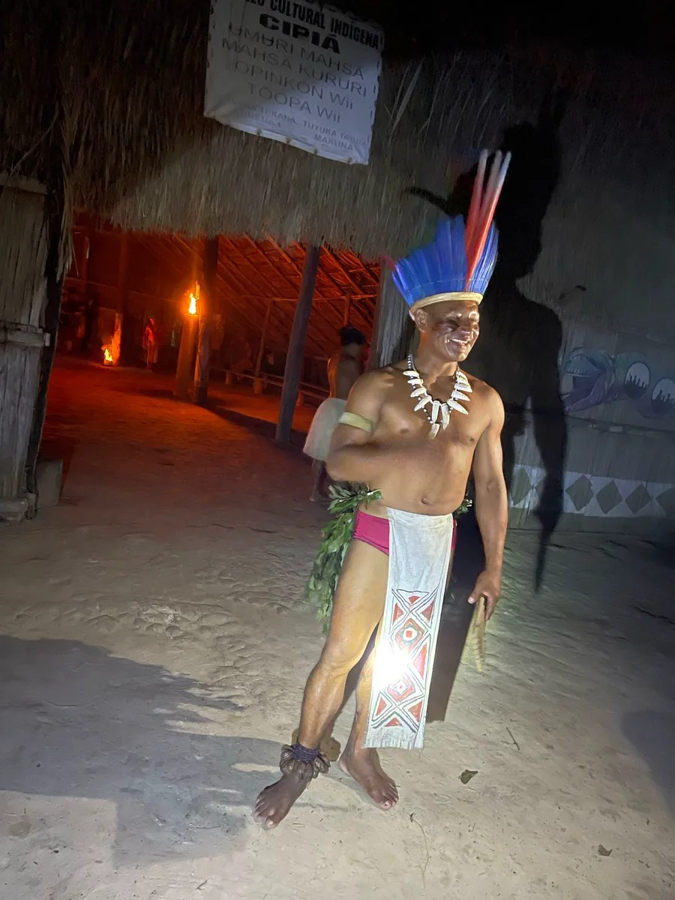
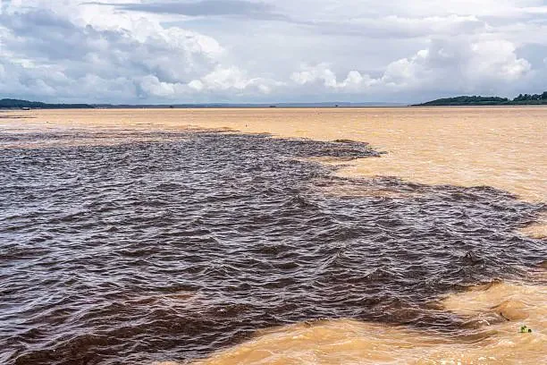
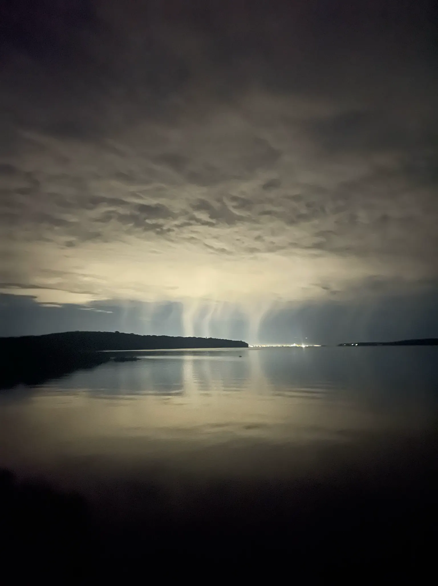
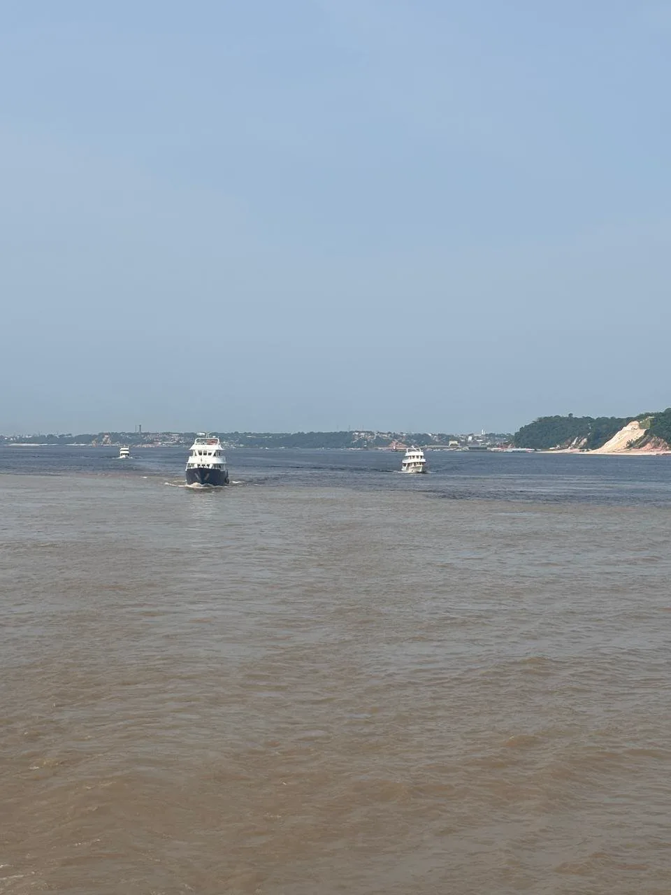
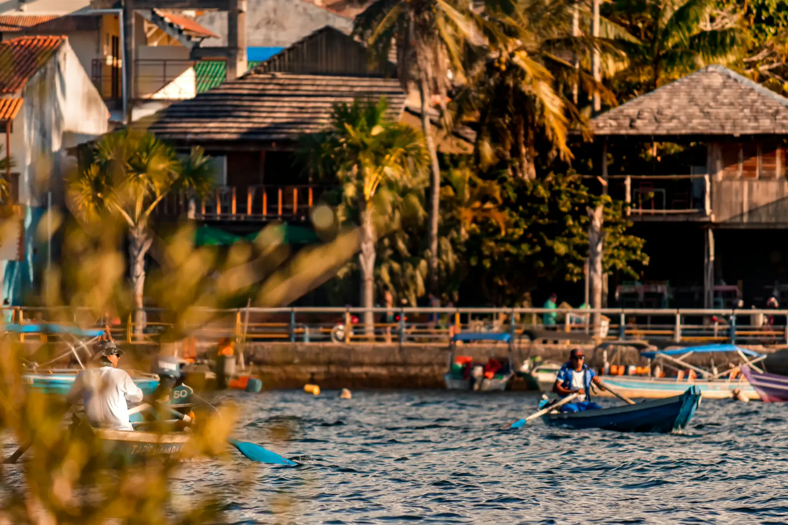
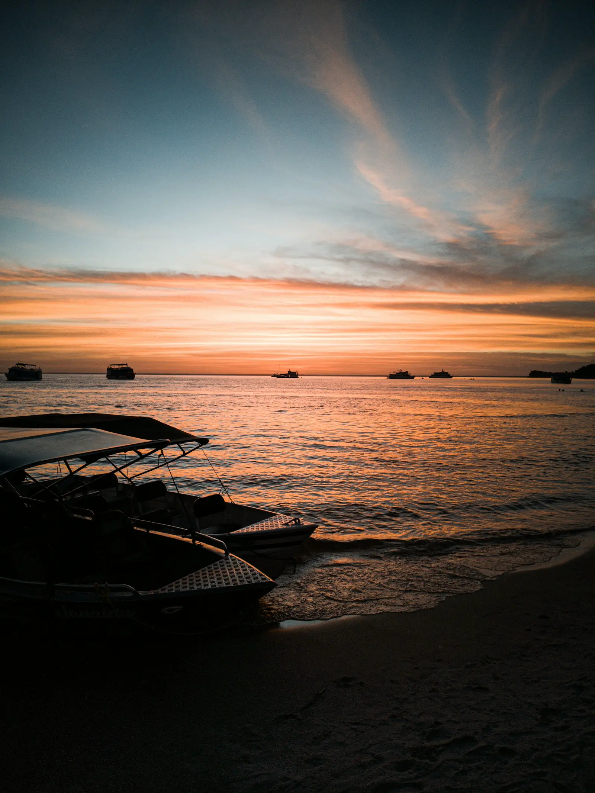
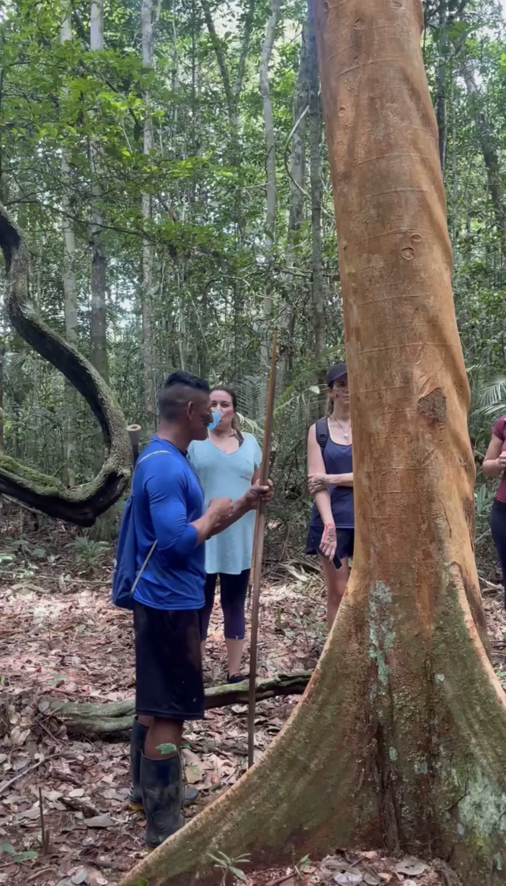
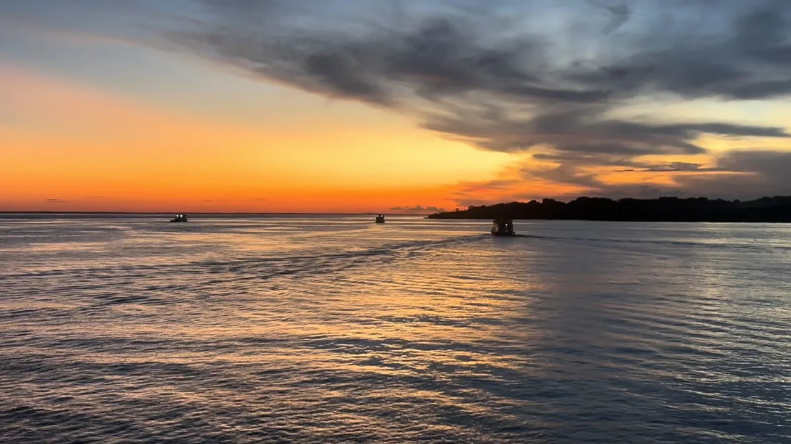
Sugestão de voos
Embarque em Manaus (MAO) · Desembarque em Santarém (STM). Latam e Azul operam os trechos. Reserve com pelo menos 60 dias de antecedência.
"Em Belém, durante a COP30, a Green Boat revelou que as melhores conexões acontecem quando natureza, propósito e líderes globais compartilham o mesmo horizonte."
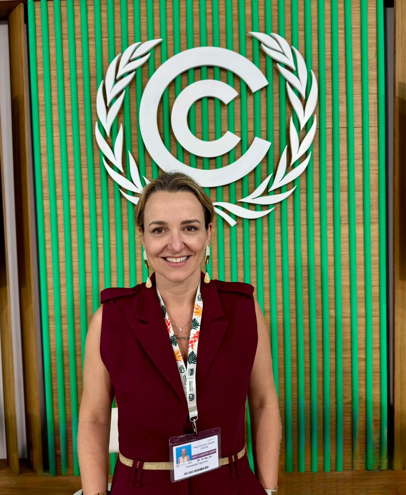
"O Ademar foi um porto seguro durante o nosso trabalho na COP30. Que equipe incrível da Green Boat — nos sentimos em casa com vocês! Hospitalidade nota mil, um trabalho feito com muito amor e cuidado."
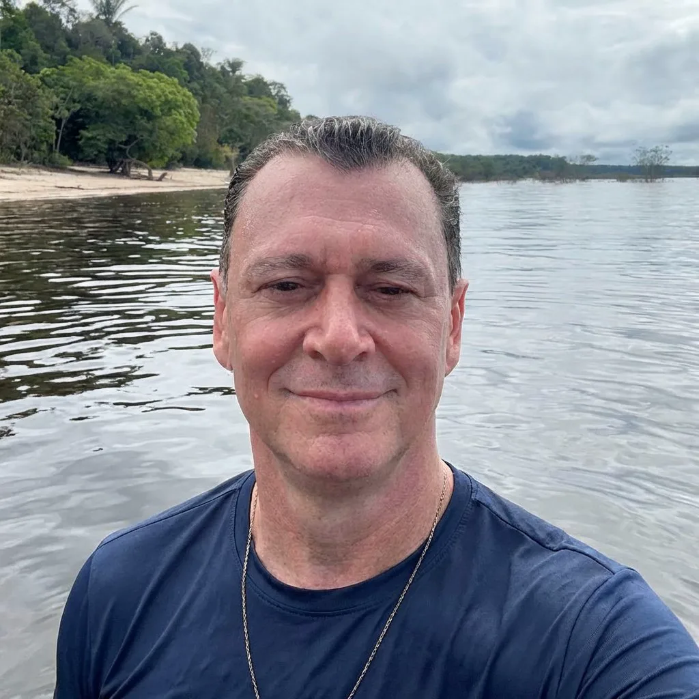
Hotel na cidade. Passeio de barco de duas horas. Transfer de volta ao aeroporto.
A Green Boat foi criada para fazer o oposto. Expedições que entram de verdade na Amazônia — pelo rio, com tempo, com profundidade. Sem pular o que é difícil de chegar.
O roteiro de Manaus a Alter do Chão surgiu de uma pergunta simples: qual seria a expedição ideal para quem quer atravessar a Amazônia pelo rio, de ponta a ponta, sem atalho?
09 de setembro de 2026 · Embarque Manaus (MAO) → Desembarque Santarém (STM) · 13 de setembro
Preços por pessoa · Acomodação dupla · Mínimo 10 passageiros para garantia da saída · Máximo 16 vagas
Se a expedição não atingir o mínimo de 10 passageiros confirmados, você recebe 100% do valor pago de volta — sem burocracia.
O barco está ancorado em Santarém. A última refeição coletiva acabou de ser servida no deck do Iana I.
Você passou 5 dias navegando pelos três maiores rios da Amazônia. Entrou em uma aldeia indígena. Almoçou em uma comunidade ribeirinha no meio do Amazonas. Caminhou entre Samaúmas centenárias na Floresta Nacional do Tapajós. Viu dois encontros de águas — ao vivo, do barco. Dormiu com o rio embaixo.
Alter do Chão ficou para trás. Mas você não chegou lá de avião — chegou pelo Tapajós, pelo rio, do jeito que faz sentido.
Essa é a diferença que fica. Não nas fotos. Na memória.
O Iana I foi preparado para quem quer profundidade — não para quem quer aventura extrema. Cabines com ar-condicionado, banheiro privativo, refeições a bordo e guia especializado do começo ao fim. Você está no rio, não sobrevivendo a ele.
A ordem das atividades pode ser ajustada em função de condições climáticas ou nível dos rios. O que não muda é a expedição — todas as experiências do roteiro são mantidas, reorganizadas quando necessário para garantir segurança e qualidade.
Você embarca em Manaus (MAO) e desembarca em Santarém (STM). Latam e Azul operam os trechos com conexões a partir das principais cidades brasileiras. Recomendamos reservar com pelo menos 60 dias de antecedência.
Roupas leves e de banho, protetor solar, repelente, chapéu ou boné, tênis confortável para trilha e medicamentos de uso contínuo. Nada de equipamento especial.
A expedição é confirmada com mínimo de 10 passageiros. Com 16 vagas no total, a margem é pequena — e as reservas definem a saída.